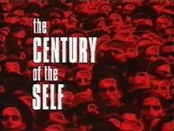

| Details |
Century of the Self is the untold and controversial story of the growth of the mass-consumer society in Britain and the USA. The political process was once about engaging people's rational, conscious minds, the documentary shows how by employing the tactics of psychoanalysis, politicians appeal to irrational, primitive impulses that have little apparent bearing on issues outside of the narrow self-interest of a consumer population.
Cinema Syndicate is an anarchist film collective, open to all, showing through political and activist film that we live in an unjust world, and it needs to change. Film shows are free, Tuesday nights at Lecture Theatre 2, Arts Tower, University of Sheffield.
Full programme and details on Cinema Syndicate Facebook
 |